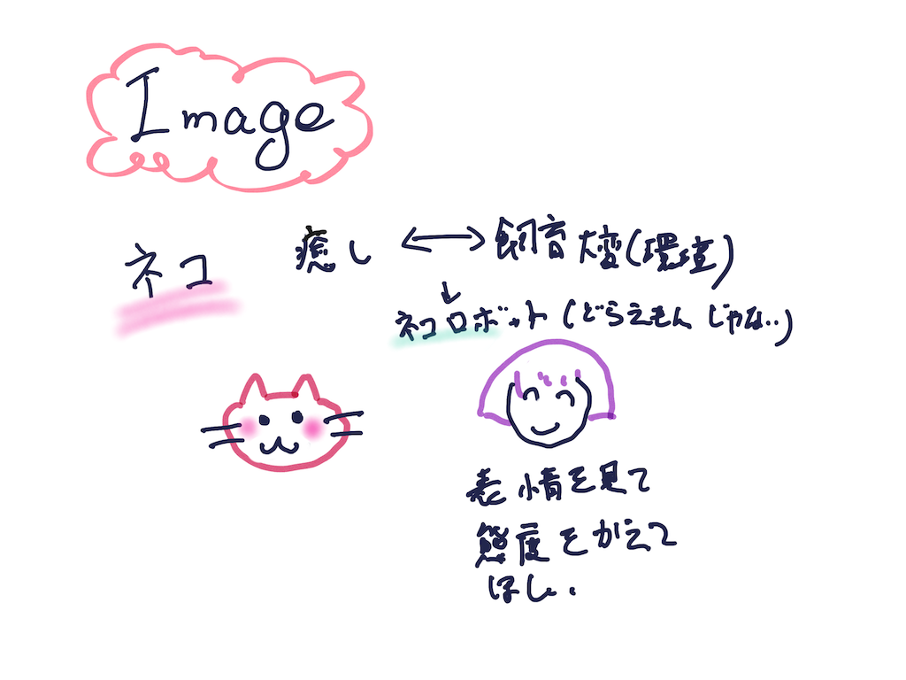
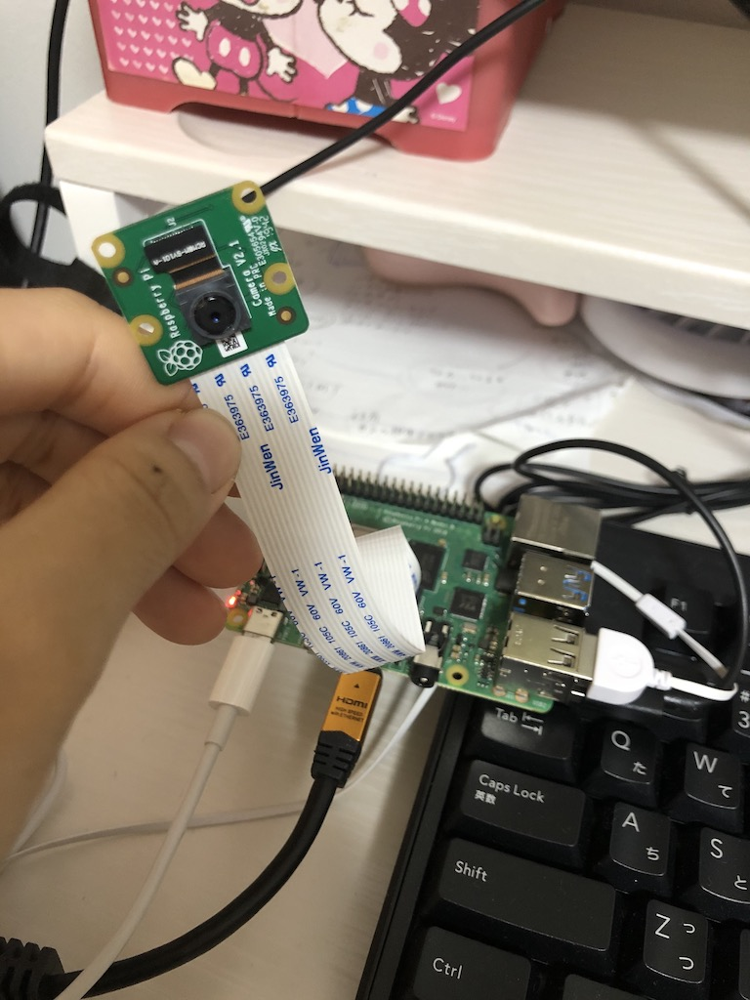
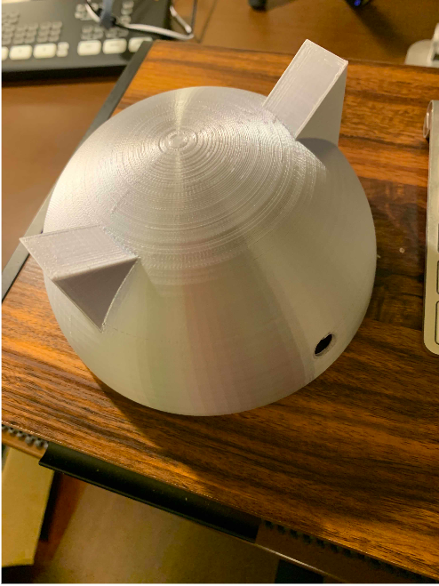
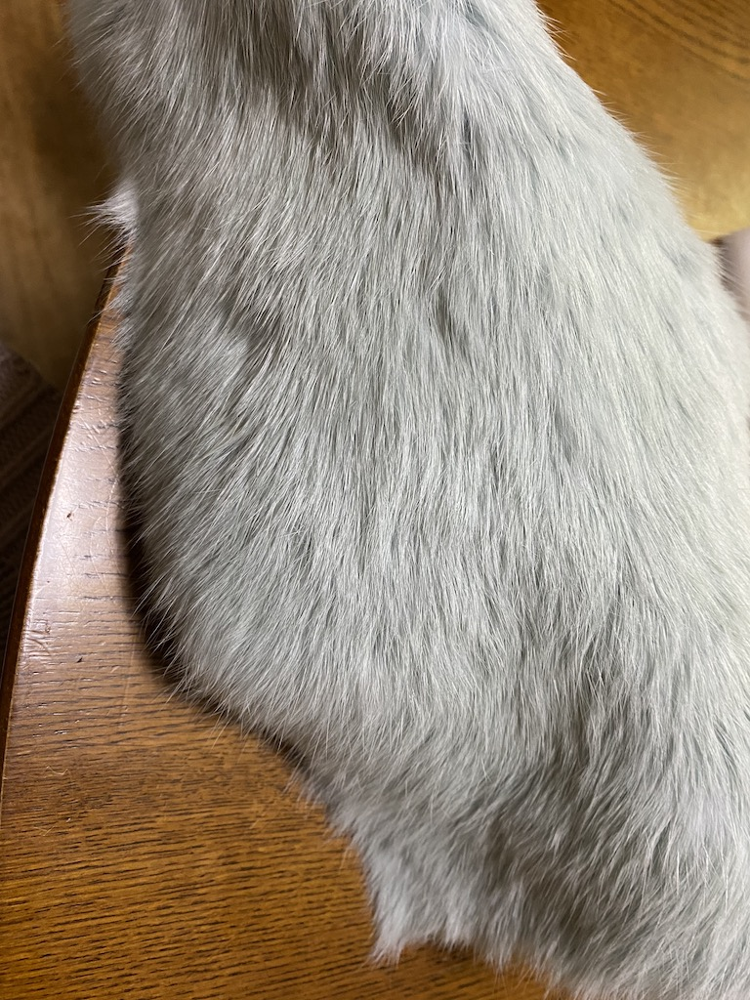
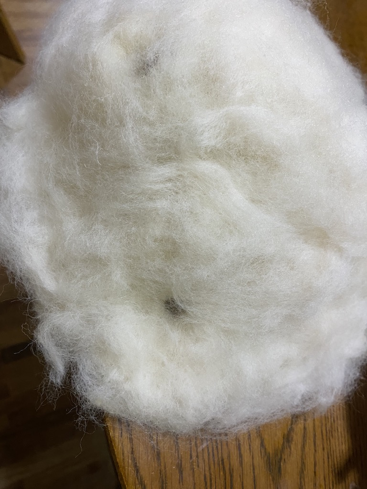
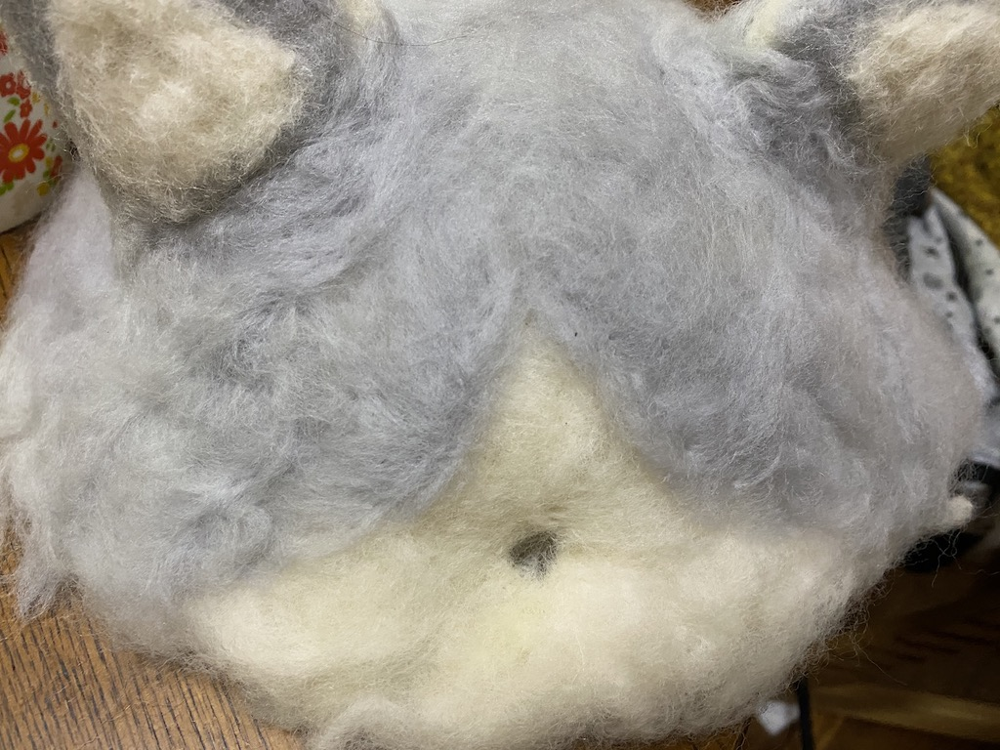

Nekobo Project Note

概要
ネコって癒されますよね〜。でも一人暮らしのアパートではネコは飼えなし。。。
ネコの癒してくれる部分だけを都合よく抽出したデバイスがあったら、コロナ禍で人と会えなくなった人々を癒してくれるはず。
Nekoboは人の表情を読み取って、鳴き声を変えて、甘えてくれたり、ほっといてくれたりする、癒しロボットです。
プロセスメモ
■は考えないといけないこと、疑問等
●は具体的にやること
→はやったこと
■感情の認識（プログラミング）
- ■カメラ使えるマイコンボードってあるの？
→ラズパイなら大丈夫そう
→●ラズパイとラズパイ用カメラを購入せねば
→ 購入！ラズパイ高い！！

- ■読み込んだとして、どうやって表情を判断する？つらい時、甘えて欲しい
→インターネット経由でマイクロソフトのAPIを利用すれば、表情の画像から人の感情を読み取ってくれそう
→やっぱり有料。。。でも無料期間が結構長い！無料期間のうちに完成させる！
●ラズパイに書き込むpythonのプログラミング
→できた。 ①笑う
②悲しい
③怒る
に加えて
④普通の時
⑤あたふたしている時
⑥驚いている時
⑦悩んでいる時
の表情を識別できた！！
先生ありがとう！やり方
■外観
- ■ネコの形
→大体の形は3Dプリンターかな？あとはネコ感は他の素材で出そう
●3Dモデリング
→3Dプリンターでつくった
→
- ●ふわふわ感をだす素材を購入する
→この素材良さげ

3Dプリンターで大体の形を作って、貼っつけたる
→ボンドでくっつかんかった(T_T)
●別の素材を探す
→フェルトが良さげ

→できたー！！

■鳴き声、動作
- ■動かす？光らせる？
→動かしたいけど壮大だから、とりあえずペンディング
→光らすと動物感より、ロボット感強くなった。→光らせるのやめっ！
- ■鳴き声はどうやって集める？
→フリー素材発見 効果音ラボ、Pocketsound
- スピーカー出力
→ラズパイとpythonでmp3を再生できるけど、ラズパイにスピーカーついとらん。購入。。。。
●音声ファイルのプログラミング
→できた！やり方
●あとは表情と組み合わせて分岐するプログラムをつければOK
→できた！
●名前をつける
→Nekoboとなずけた。